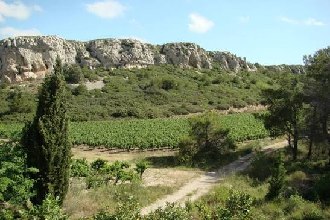

Massif de
la Clape


⟹ Nature & Patrimoine ⟸
Une histoire qui commence bien avant l'homme. Le massif de la Clape est l'extrémité orientale des reliefs liés aux Corbières. Ses paysages sont dominés par des calcaires du Crétacé inférieur, vieux de plus de cent millions d'années, déposés dans d'anciennes mers chaudes. Plissements, failles, soulèvements et érosion ont ensuite sculpté plateaux, corniches, combes, gouffres et cavités. Les fossiles présents dans certaines couches et la flore fossile d'Armissan témoignent des profondes transformations climatiques et géologiques qu'a connues la région.
L'ancienne île du golfe de Narbonne. Pendant l'Antiquité et une partie du Moyen Âge, la Clape était séparée du continent par des bras d'eau et des lagunes. Elle formait l'une des îles du vaste golfe narbonnais. Les noms anciens transmis par les sources — sous des formes telles que Insula Laci, « île du lac » — gardent la mémoire de ce passé insulaire. Les falaises dites « mortes », aujourd'hui éloignées du rivage, correspondent à d'anciens fronts de mer que les vagues attaquaient lorsque la Méditerranée atteignait encore le pied du massif.

Le rattachement progressif au continent. Les alluvions de l'Aude, les limons des plaines et les cordons sableux littoraux ont peu à peu comblé les bras de mer entourant l'île. Ce processus, étalé sur des siècles, transforme le golfe antique en étangs et marais et finit par rattacher la Clape au continent. Le massif domine désormais la basse plaine de l'Aude, Narbonne, les lagunes et les salins de Gruissan, mais sa silhouette conserve l'allure massive d'une ancienne île.
Une présence humaine très ancienne. Les grottes de la Clape ont servi d'abris dès la Préhistoire. La grotte de la Crouzade, près de Gruissan, est l'un des sites majeurs pour comprendre les occupations préhistoriques du secteur. Plus tard, la proximité de Narbo Martius donne au massif une place importante dans le système portuaire romain : l'île Saint-Martin et le secteur de Gruissan contrôlent une partie des accès au port antique de Narbonne.
Vigne, pierre, bois et pâturages. Depuis l'Antiquité, les hommes exploitent les ressources du massif. La vigne y trouve des sols calcaires, marneux et caillouteux, des pentes bien drainées et un climat sec balayé par le Cers. Au Moyen Âge et à l'époque moderne, défrichements, pâturage, cultures, charbonnage et prélèvements de bois transforment la végétation. La pierre calcaire est également utilisée pour les constructions, les murets et les ouvrages ruraux. L'érosion des sols et l'abondance des pierrailles ont probablement contribué à l'image de « tas de pierres » associée au mot occitan clapas, généralement rapproché du nom actuel de la Clape.
Un massif religieux et maritime. La Clape est aussi un territoire de sanctuaires et de mémoire. Au-dessus de Gruissan, Notre-Dame des Auzils est liée depuis des siècles aux marins et aux pêcheurs. Le chemin qui mène à la chapelle est bordé de cénotaphes dédiés aux marins disparus en mer, formant un « cimetière marin » sans sépultures. Depuis les hauteurs, les vigies et points dominants permettaient également de surveiller la mer, les navires et les risques d'incursion.
La construction d'un grand terroir viticole. La vigne, présente depuis l'Antiquité dans la Narbonnaise, devient l'une des signatures majeures de la Clape. Le terroir bénéficie en 1951 d'une reconnaissance en VDQS dans le cadre des Coteaux du Languedoc, puis évolue au sein des appellations languedociennes. En 2015, « La Clape » obtient sa reconnaissance comme AOC/AOP autonome. Les domaines viticoles sont aujourd'hui insérés dans un paysage où les parcelles alternent avec la garrigue et les pinèdes, donnant au vignoble son caractère très particulier.
Un patrimoine naturel reconnu. Le massif, d'environ 15 000 hectares, est classé au titre des sites depuis 1973 et bénéficie de plusieurs dispositifs de protection, notamment Natura 2000 et des inventaires ZNIEFF. Il abrite une flore méditerranéenne remarquable. La Centaurée de la Clape, plante extrêmement rare et endémique de ce massif, symbolise cette richesse. Les falaises, grottes et pinèdes accueillent également rapaces, chauves-souris et nombreuses espèces adaptées aux milieux secs.
Le feu, menace historique et contemporaine. La sécheresse estivale, le vent et la végétation méditerranéenne rendent la Clape très sensible aux incendies. Les grands feux ont à plusieurs reprises remodelé ses paysages. La prévention, les pistes DFCI, les restrictions d'accès lors des périodes de risque et la gestion des espaces ouverts sont devenues des composantes essentielles de la protection du massif.
Un paysage devenu emblématique de la Narbonnaise. Culminant autour de 214 mètres au Pech Redon, la Clape n'est pas une haute montagne, mais son isolement au-dessus des plaines et de la mer lui donne une présence spectaculaire. Gouffre de l'Œil Doux, falaises, vignobles, garrigues, Notre-Dame des Auzils et vues sur les lagunes en font aujourd'hui un haut lieu du Parc naturel régional de la Narbonnaise en Méditerranée. Son histoire réunit géologie, Préhistoire, navigation antique, viticulture et protection de la nature sur un même territoire.
Gruissan : village en circulade et sa Tour Barberousse, au pied du massif côté sud.
Narbonne-Plage et Saint-Pierre-la-Mer : les stations balnéaires adossées à la Clape, côté littoral.
Étangs de Bages-Sigean : la grande lagune visible depuis les points de vue du massif.
Narbonne : cathédrale Saint-Just et Palais des Archevêques, à l'ouest du massif.